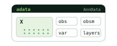
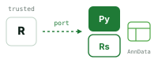
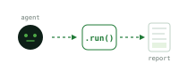

Open-source multi-omics
Unified multi-omics in Python. Rust and Torch underneath.
Bulk, single-cell, spatial, and multi-modal — all AnnData-native. Hot loops in Rust; tensor methods on Torch.
$pip install omicverse
Ecosystem coverage
Omics modules already covered by OmicVerse.
One ecosystem spans raw assays, preprocessing, major omics modalities, and domain-specific analysis layers.
DNA
Assay
FASTA, count matrix, VCF, and alignment-oriented input layers.
ov.align
QC
Preprocess
QC, normalization, PCA, clustering, and batch correction.
ov.pp
SC
Single-cell
Velocity, annotation, NMF, trajectory inference, and cell-state analysis.
ov.single
XY
Spatial
Spatial clustering, deconvolution, neighborhoods, and segmentation workflows.
ov.space
BK
Bulk
Bulk transcriptomics, differential analysis, deconvolution, and pathway context.
ov.bulk
FM
Foundation
Cell embeddings, perturbation models, and foundation-model workflows.
ov.fm
3D
Molecular
Molecular structure, docking, and structure-aware analysis.
ov.mol
AT
Epigenomics
ATAC, ChIP, Hi-C, CUT&Tag, CUT&RUN, and regulatory signals.
ov.epi
MB
Microbiome
16S workflows, taxonomy summaries, diversity analysis, and abundance testing.
ov.micro
MT
Metabolomics
ID mapping, MSEA, Mummichog, SERRF, biomarkers, and pathway-level readouts.
ov.metabol
How it fits together
One Python surface. Rust and Torch in the engine room.
The unified library sits on top of language-appropriate compute backends, with everything speaking AnnData.
/01
One API across data types
The same ov.pp / ov.tl / ov.pl surface works for bulk, single-cell, spatial, and multi-modal data — read it once, use it everywhere.

/02
AnnData throughout
Inputs and outputs match the scanpy / AnnData conventions, so OmicVerse plugs into pipelines you already have without rewrites.

/03
Rust for hot loops
Compute-heavy paths (NMF, Hi-C imputation, BandNorm normalization) are written in Rust — 10–200× speedups with bit-identical numerics.
/04
Torch for tensor methods
Tensor and deep-learning methods run on PyTorch with first-class GPU support; classical methods stay on NumPy / SciPy.
